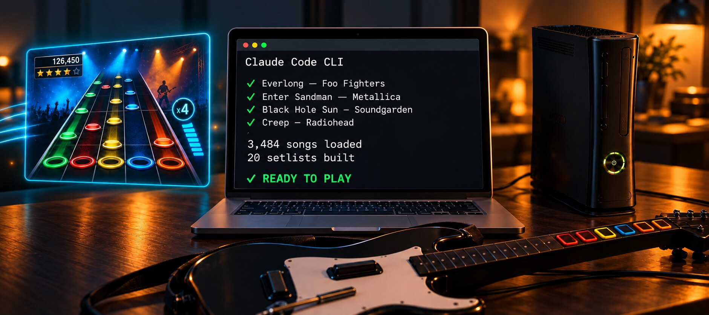

Who Says Claude Code CLI Is Only for Work or Boring Stuff?
I used it to sort out 3,500 Rock Band songs on a modded Xbox 360. Somewhere in the middle Opus started talking to the console by itself.
The laptop does the sorting. The console only plays.
It Started With Metallica
I was not debugging anything. I wanted more Metallica.
My Rock Band 3 collection had grown over years. About 3,500 songs in 36 packages, a lot of them Guitar Hero conversions. I asked Opus what Metallica I am missing. Opus read the metadata out of the packages and said I already own 41 tracks.
So I went to the console to look. Six showed up. The song list was around 2,400 songs, not 3,500, and the Metallica playlist would not even open - the game said I do not own 42 of the songs in it.
My first thought was that I broke something. Opus killed that in a minute. A playlist is only a list of names, so if the game says you do not own them, the songs are missing and not the list. Different problem, and a better one.
What I Would Have Done Alone
This is the honest part. I would have re-downloaded the packages. Probably twice, on a slow connection, and learned nothing.
Opus read the first kilobyte of each file instead. Every Xbox 360 content package carries a content type and a title ID in its header. Those two values are the folder the file belongs in. Content type 1 is a saved game, one folder. Content type 2 is downloadable content, another folder.
CON ct=1 tid=45410914 -> 45410914/00000001 Guitar Hero On-Disc Pack 01
CON ct=1 tid=45410914 -> 45410914/00000001 Guitar Hero DLC Pack 01
LIVE ct=2 tid=45410829 -> 45410829/00000002 Rock Band Song Exporter LicenseMine were all in one folder. Thirty-three of thirty-six in the wrong one. A file in the wrong folder is not corrupt and not rejected, the console just never asks about it. Nothing in a log, nothing on screen. Over 1,000 songs were on the drive the whole time, in perfect condition, invisible.
Then Opus Connected to My Xbox
Here is the part I did not see coming.
I thought the answer would be a plan. Move this here, move that there, maybe a script for me to run. 101 GB of packages, and the only way I could see was sending the whole library again. Six duplicate packs included, because on my own I would not have known they were duplicates. The console takes files at about 4 MB per second. Seven hours.
So I asked what felt like a dumb question. The console is on the network and Aurora has FTP. If the files only change folders, why move them at all? Can you not do it on the Xbox directly?
Opus could. That still surprises me. Claude Code CLI logged into a 2005 game console straight from my terminal. Walked the content folders. Showed me exactly what was sitting where.
Opus did not start moving things straight away either, which I liked. First a 1 KB throwaway file, uploaded and renamed. That was the test. Some FTP servers do a rename as copy and delete, and on a 4 GB package that mistake costs an evening. The test passed. Opus showed me the list of 29 moves and waited for me to say go.
ok 0.009s 0.20 GiB LostRBDLC
ok 0.010s 3.69 GiB RB1DLCPACK05OF10-004_
ok 0.019s 3.92 GiB Guitar Hero On-Disc Pack 01-002_The biggest package is 3.92 GiB and it moved in 19 milliseconds. A rename does not touch the file, it rewrites one directory entry. Seven hours became one second. No drive unplugged, nothing copied, no reboot.
I booted the game and Enter Sandman was back, with everything else.
Then the Playlists
With the library visible, the old annoyance came back. RB3 is lacking basic playlist abilities: making your own; putting one song in several playlists; playing a playlist in random order; dropping songs you do not want etc. The setlists are baked into the game data.
Which is strange good news, because anything baked in can be rebuilt. Opus read the metadata out of every package and built me 20 playlists with my requirements, 100 songs max each. Metallica Tribute, 80s Throwback, Classic Rock, Pop Hits, Party & Funk, Karaoke Night, Drums Workout, Bass Lines, Guitar Heroes and the rest.
So 415 songs are now sitting in more than one playlist. No menu would ever have let me do that. 3,500 songs stopped being a song list and became my library, by genre, by decade, by artist.
Shuffle - now possible too. The play order is just the order the list is written in, so Opus rewrites it, rebuilds the patch and pushes it back to the console in a few minutes, any time I ask.
And if I want songs out, there is a web catalogue now, a minute of work for Opus. I open it on my phone while I play and click what I do not want. Removing is an exclusion list and not a delete, so the song stays installed and I can change my mind later.
How We Actually Worked
Looking back at it, the split is the interesting part. Opus found in one minute a detail I did not know existed and would never have gone looking for. I asked whether we could skip the copying, which was not clever, just someone who did not want to sit through seven hours of transfer.
Opus also told me when I was wrong. My own notes said the folder mismatch does not matter. It did. It was the whole bug.
Neither half gets there alone. The reading is fast and does not get bored at the fortieth file header. The dumb question comes from the person who has to live with the result.
So no, Claude Code CLI is not only for work or boring stuff. Opus spent a Saturday inside a game console and my Rock Band nights are now rocking even more.
Previous posts: The CKA Took Me Four Sits · Empty Logs and a Burning Core · Every Light Was Green. The Cluster Was Dead.